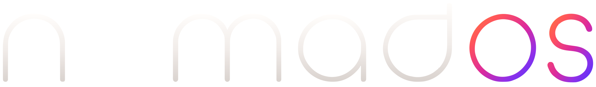
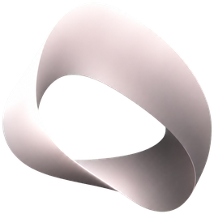

Your desktop, on any machine.
Nomad is a desktop environment that lives in your account rather than on a laptop. Sign in anywhere and your desk is already there — your dock, your arrangement, your apps, exactly as you left them.
Early build. Nomad installs per-user, so it needs no administrator, and uninstalls from Windows' own app list. Windows will warn that the publisher is unknown — the app is not code-signed yet.